Part A: exploring a pretrained flow model · Part B: flow matching from scratch on MNIST
In Part A I used a pretrained text-to-image flow model, PixNerd-XXL-P16-T2I, which makes 512×512 images. A flow model moves along a straight line between pure noise and a clean image:
xt = (1 − t)ε + t·x1
At t = 0 the image is pure noise ε, and at t = 1 it is the clean image x1. The model predicts the velocity v = x1 − ε, which is the direction to move to get from the noise to the image. For every run I used a base seed of 180, Euler step size h = 0.02, and CFG weight w = 7 where guidance is used.
I implemented interpolate(image, noise, t) as (1 - t) * noise + t * image
and the provided checks confirm both endpoints: t = 0 gives back the noise and t = 1 gives back
the image. I used one photo of my own, which the provided preprocessing center-crops and resizes
to 512×512, and sampled a single noise
tensor that I reused at t = 0.25, 0.50, and 0.75. At t = 0.25 the image is mostly noise, and by
t = 0.75 the photo is clearly visible with some grain on top.
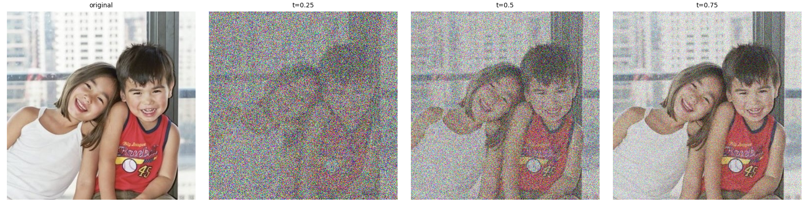
As a baseline with no learned model, each noisy image is divided by t to bring the image back to its normal brightness, and then blurred with a Gaussian. The provided cell sweeps σ = 1, 2, 4, 8, and 16 and picks the one with the lowest mean squared error compared to the original. The noisier the input, the bigger the blur that worked best: σ = 8 at t = 0.25, σ = 4 at t = 0.50, and σ = 2 at t = 0.75. The blur gets rid of the grain, but it also gets rid of all the fine detail, so the result is always a smeared version of the photo.
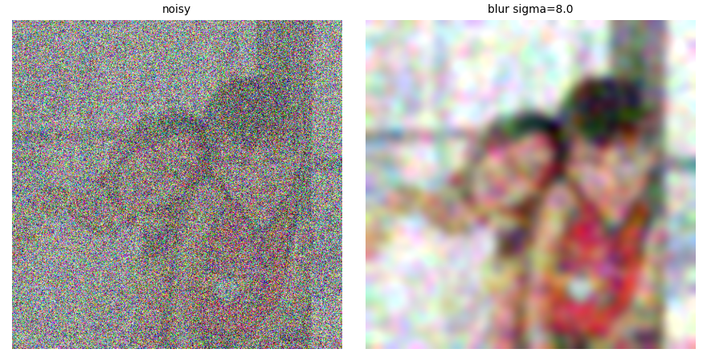
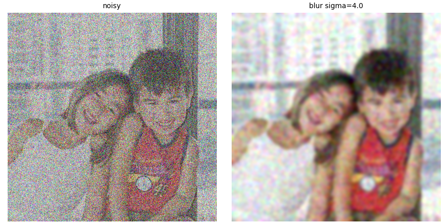
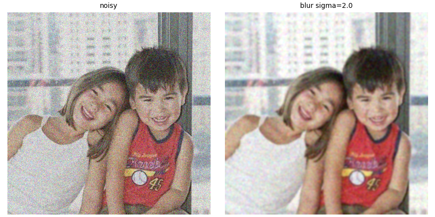
Since the model predicts the velocity, I can jump straight from xt to an estimate of the clean image in one step by moving the rest of the way along the line:
x̂1 = xt + (1 − t)·vθ(xt, t, c)
I used the prompt "a high quality photo". This is much better than the blur. At t = 0.75 the estimate is very close to the original. At t = 0.25 the overall picture is right (two kids, the same colors and pose), but the faces and textures are smoother and less detailed, because with that much noise the model has to guess what the details looked like.
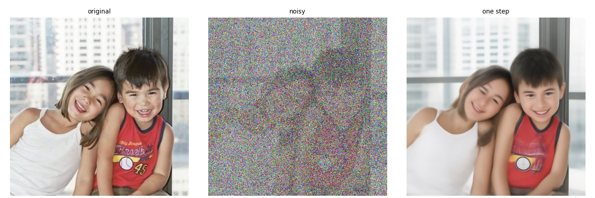
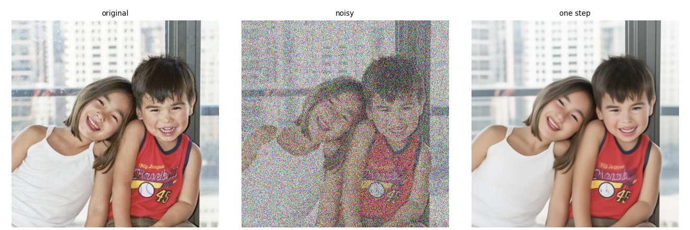
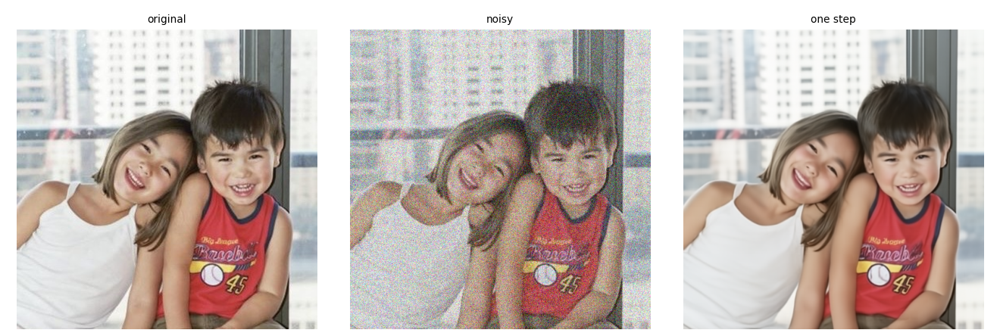
Here I compared what the model adds in the one-step update, (1 − t)v̂t,
against the update that would recover my original image exactly, (1 − t)vgt =
x1 − xt. Using the provided display code, both updates are shown on
the same symmetric RGB scale, where middle gray is 0. The error map is the RMS over the three color channels at each pixel,
Et = sqrt(meanRGB([(1 − t)(v̂t − vgt)]²)),
computed before any display scaling, with the same color limits at all three times.
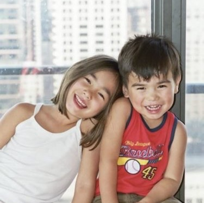
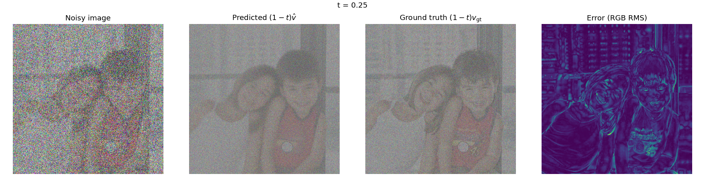
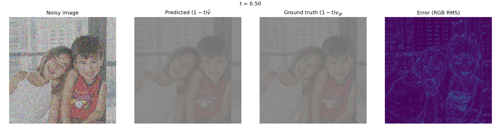
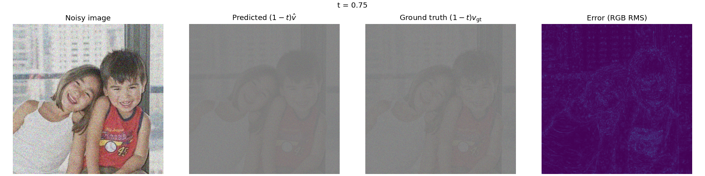
The ground-truth update still has grain in it, because it has to cancel out the exact noise that was added. The predicted update is smoother: the model can't know the exact noise, so it predicts the average clean image that fits. The error is lowest in flat areas like the walls and highest along edges and fine details, like the faces, hair, and the text on the shirt. As t gets bigger, the error gets smaller, since there is less noise to remove and the update itself is smaller.
Instead of jumping to the end in one step, Euler sampling takes many small steps and recomputes the velocity after each one:
xt+h = xt + h·vθ(xt, t, c)
If the last step would go past t = 1, I shorten it so it ends exactly at 1. The provided test runs my sampler on a constant velocity field of all ones: starting at 0, 0.5, and 0.93 took 50, 25, and 4 steps, and each ended at exactly 1 − tstart, which is the right answer. Starting from the t = 0.50 noisy image, I ran 25 steps of h = 0.02. The figure below shows every state from t = 0.50 to 1.00, which includes the initial state, every fifth update, and the final image.
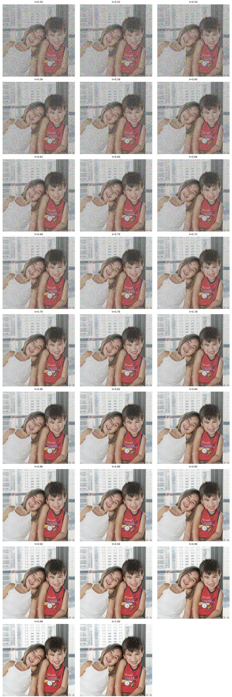
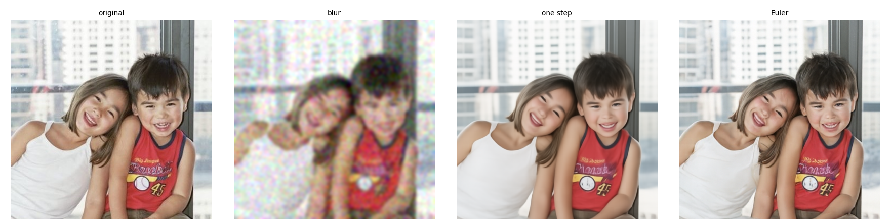
The Euler result is the sharpest of the three. The blur is a smeared mess, and the one-step result is clean but a little too smooth, almost airbrushed. The Euler result brings back realistic texture in the hair, skin, and background. Interestingly, the one-step result has a slightly lower MSE (0.0048) than Euler (0.0057), while the blur is much worse (0.0170). This is because one-step predicts the average of all the clean images that could fit, which is safest for MSE, while Euler commits to one specific realistic image, whose details don't exactly match the original.
Starting at t = 0 from pure random noise and running Euler all the way to 1 (50 steps) with "a high quality photo" generates new images from scratch. I used seeds 200 through 204.
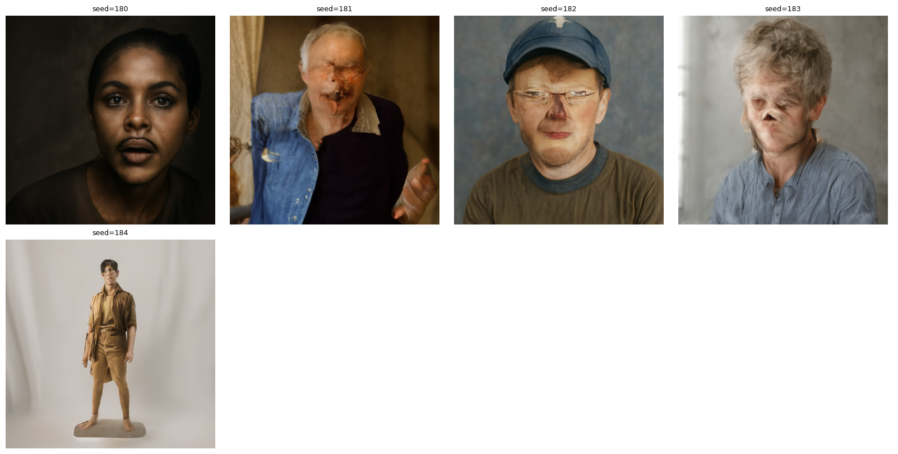
Every single sample is a person, and four out of five are a close-up portrait facing the camera against a plain studio background. So the generic prompt strongly favors people, probably because "high quality photo" shows up most often with portrait photography in the training data. The quality is also very uneven: the first face looks fairly realistic, but the others have melted or warped features, especially the second and fourth, and the last one looks more like a figurine on a stand than a real person.
CFG runs the model twice at every step, once with the prompt (vc) and once with an empty prompt (vu), and pushes the velocity further in the direction the prompt adds:
vcfg = vc + w(vc − vu)
A provided check confirms that w = 0 gives exactly the normal conditional prediction. With w = 7 and the same five starting noises as in 1.6:
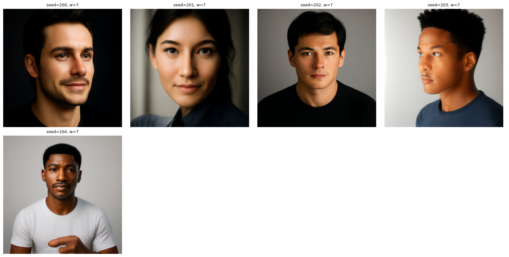
Compared to 1.6, the CFG images are much better. Every face is complete and realistic, with sharp eyes, clean skin, and studio lighting. The melted faces from seeds 201 and 203 are fixed, and seed 204 becomes a real person instead of a figurine. The tradeoff is that the images look more alike: they are all centered head-and-shoulders portraits with a similar polished look.
To edit an image, I add some noise to it by starting at tstart on the line between noise and the image, and then run Euler with CFG from there to t = 1 with "a high quality photo". A small tstart means lots of noise, so the model makes up almost everything. A large tstart means little noise, so the result stays close to the original. I used starting times 0.02, 0.04, 0.06, 0.10, 0.14, 0.25, and 0.50.
At 0.02 only a white column in a blue blur survives. By 0.04 to 0.14 the trees and sky are back and the tower becomes a smooth white obelisk. At 0.25 the bell windows show up, and at 0.50 it is almost the real Campanile, clock included.
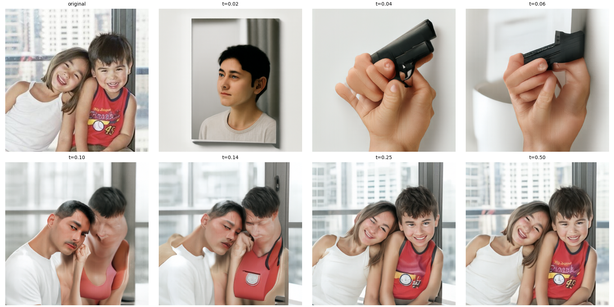
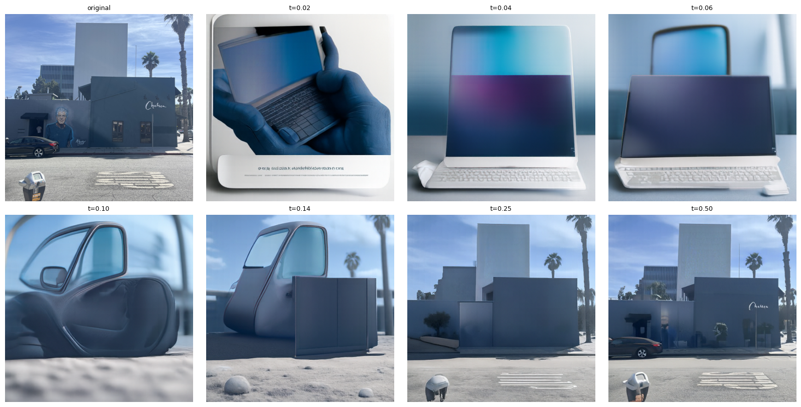
In my first image, the smallest starting times ignore the photo and generate a person, which matches what I saw in 1.6. My second image (a street scene) goes a different way: the model keeps its blue-gray colors and turns it into a laptop at 0.02 to 0.06, and then into a rounded car-like object at 0.10 and 0.14. By 0.25 the building, palm trees, and parking meter are back, and at 0.50 it is almost the original photo, with the "Chelsea" sign and the parked car.
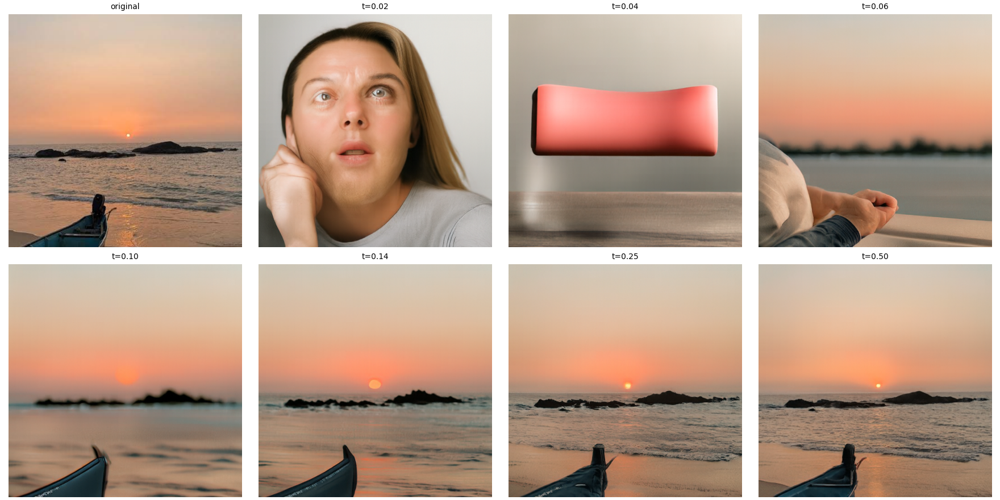
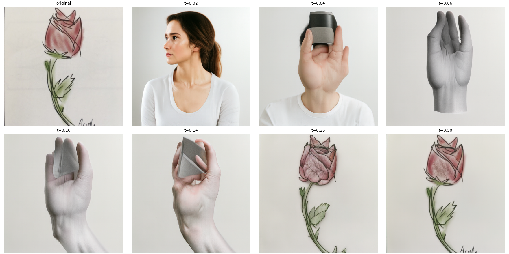
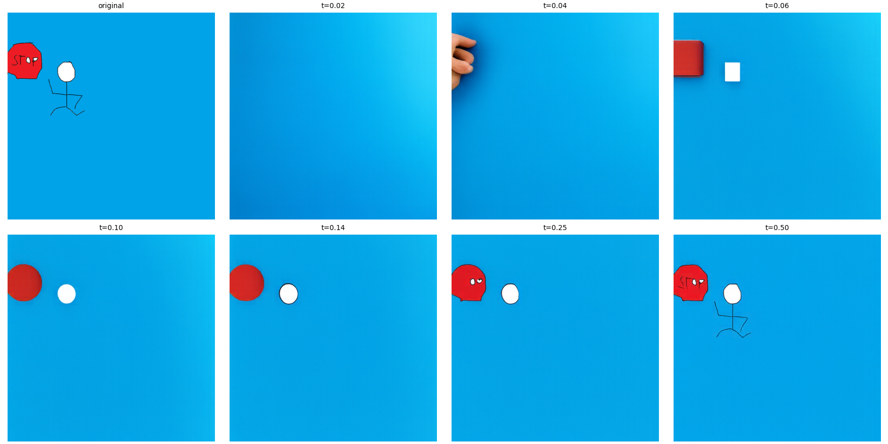
The drawings are the most fun to watch, because the model tries to turn them into real photos. The rose becomes a hand around 0.06 to 0.14 (the stem and petals look like a wrist and fingers), and at 0.25 it turns into a realistic, detailed rose. In the stick figure drawing, the red stop sign becomes a red block and then a red ball, and the head becomes a white circle, before the drawing comes back at 0.50. The beach is a real photo, so from 0.10 on it just turns into a slightly different, softer version of the same sunset.
This is the same as 3.1, but instead of "a high quality photo" I used my own prompt for each image, so the model pulls the image toward something specific.
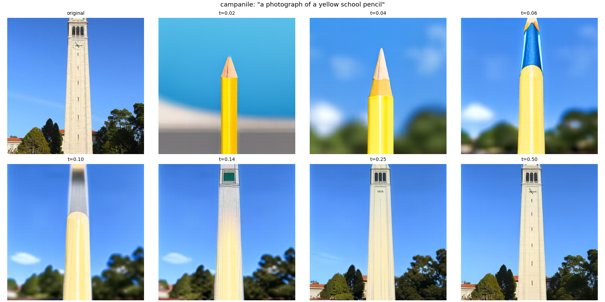
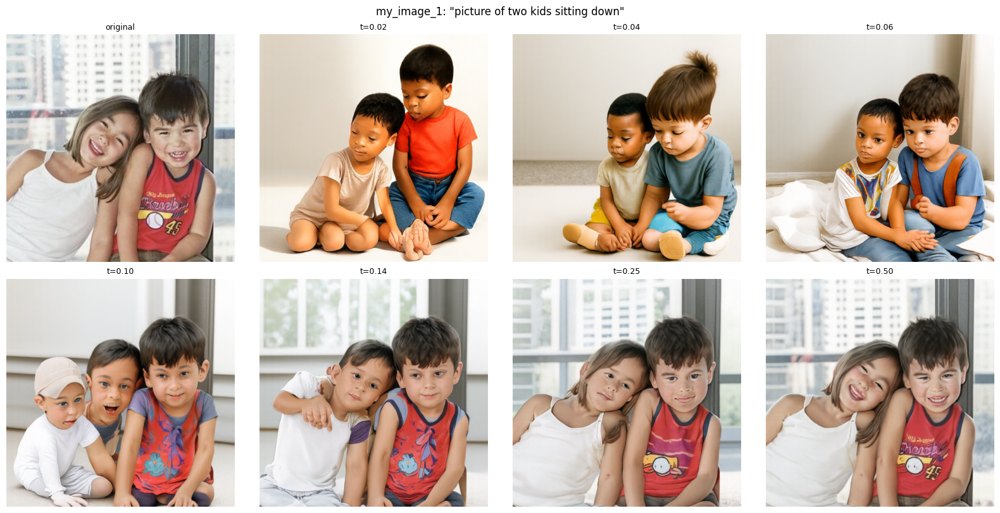
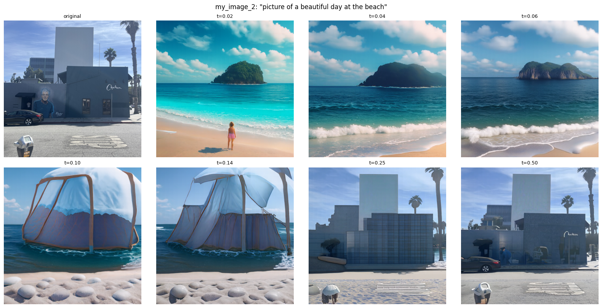
The Campanile works best since a pencil has the same tall, thin shape as the tower. From 0.02 to 0.10 it becomes a yellow pencil in front of the same blue sky and trees, and at 0.14 you can see a mix of both, a pencil with the tower's window. For my first image, I described the photo itself, so the prompt and the photo agree. At 0.02 to 0.06 the model makes two different toddlers sitting on the floor in a plain room, at 0.10 and 0.14 the window and the red shirt come back but the faces are still new, and from 0.25 on it is basically my photo. In my second image, the small starting times give a postcard beach with an island and no sign of the street. At 0.10 and 0.14 the dark building turns into a blue beach tent or umbrella standing in the water, and at 0.25 and 0.50 the building comes back, but the street is now sand.
A visual anagram looks like one thing upright and another thing upside down. At each step I compute the CFG velocity for the first prompt on the image, and the CFG velocity for the second prompt on the image rotated 180° (then rotate that velocity back). Averaging the two and taking an Euler step makes an image that has to satisfy both prompts at once:
v = ( CFG(xt, t, p1) + flip(CFG(flip(xt), t, p2)) ) / 2
def visual_anagrams(noise, condition_a, condition_b, predict_velocity, w=7, step_size=0.02):
def anagram_velocity(x, t):
v1 = cfg_velocity(x, t, condition_a, w, predict_velocity)
v2 = cfg_velocity(rotate180(x), t, condition_b, w, predict_velocity)
v2 = rotate180(v2)
return (v1 + v2) / 2
image, _ = euler_sample(noise, 0.0, step_size, anagram_velocity)
return image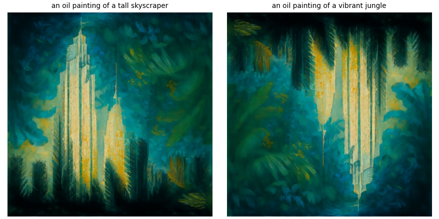
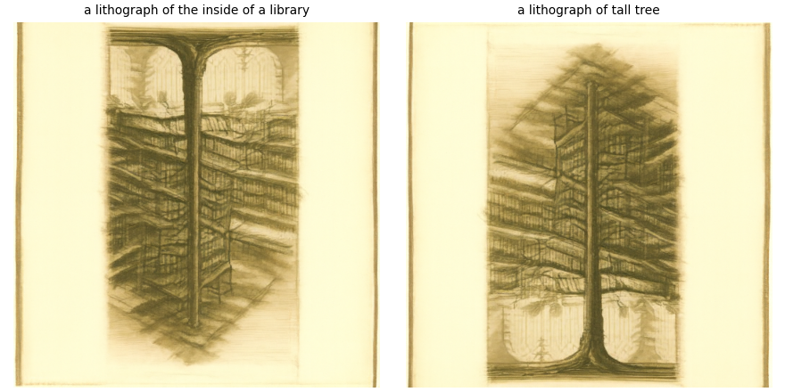
In the first one, the glowing gold skyscrapers become beams of sunlight coming down through the jungle when flipped, and the dark leaves around the edges work as both the night sky and the jungle plants. In the second one, the tree trunk is the center column of the library, and its branches are the rows of bookshelves. Flipped upside down, the library's arched ceiling becomes the tree's roots and the shelves become its branches.
This is the same idea as the hybrid images from Project 2, but done while generating. At each step I take the low frequencies of the velocity for one prompt and the high frequencies of the velocity for another prompt, using the provided low-pass filter (a Gaussian blur with kernel size 265 and σ = 16):
v = lowpass(v1) + ( v2 − lowpass(v2) )
def make_hybrids(noise, condition_a, condition_b, predict_velocity, w=7, step_size=0.02):
def hybrid_velocity(x, t):
v1 = cfg_velocity(x, t, condition_a, w, predict_velocity)
v2 = cfg_velocity(x, t, condition_b, w, predict_velocity)
return lowpass(v1) + (v2 - lowpass(v2))
image, _ = euler_sample(noise, 0.0, step_size, hybrid_velocity)
return imageUp close you see the high-frequency prompt. The small versions on the right simulate looking from far away, where only the low-frequency prompt is visible.
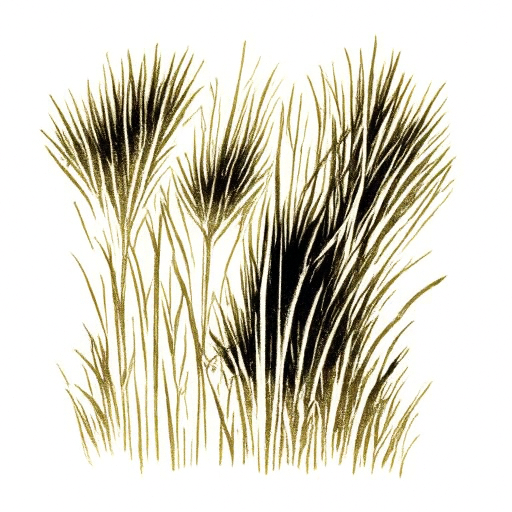
Both of these are subtle. Up close, the first one is clearly a city skyline, and from far away the jagged line of the towers and spires reads more like a row of mountain peaks. In the second one, the darkest clumps of grass are where the dog is: from far away they blend into a dark shape with two pointed tufts on the left like a head and ears. The high-frequency prompts won out in both, probably because a skyline and a mountain range already have similar outlines, and the grass strokes are strong enough to cover most of the dog's shape.
In Part B I built and trained my own UNet on MNIST. The UNet goes down to a 7×7 and then a 1×1 feature map with DownConv blocks and average pooling, then back up to 28×28 with UpConv blocks, with skip connections that concatenate the matching layers from the way down. Each block is a convolution (or transposed convolution on the way up), BatchNorm, and GELU.
To train a denoiser I need pairs of noisy and clean images, made with z = x + σε where ε is Gaussian noise. As σ goes up, the digit fades into the noise.
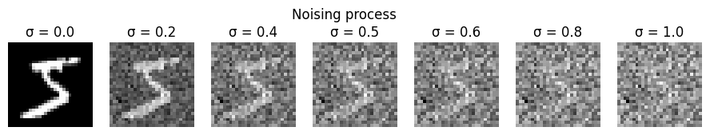
I trained the UNet with D = 128 on the MNIST training set to map z (with σ = 0.5) back to the clean digit, using an L2 loss, Adam with learning rate 1e-4, batch size 256, and 5 epochs. New noise is drawn for every batch, so the model never sees the same noisy image twice. The loss drops quickly in the first 100 steps and then slowly levels off around 0.01.
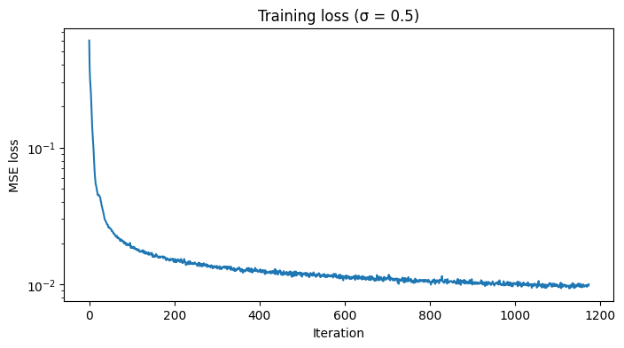
To compare the epochs fairly, I saved the model after epoch 1 and epoch 5 and ran both on the same 8 test digits with the same noise.
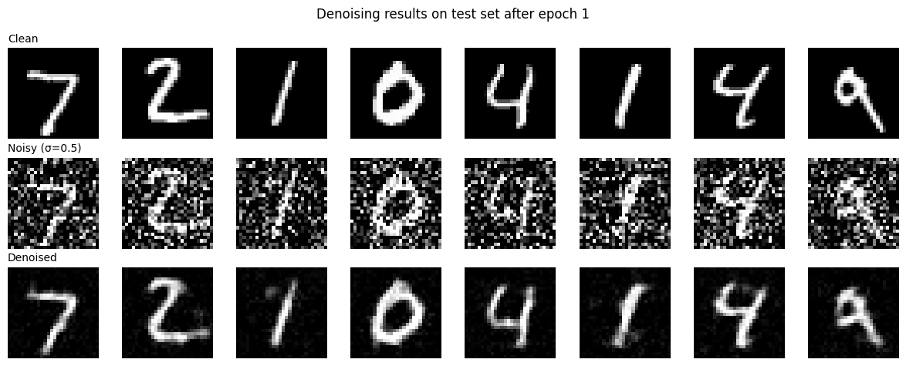
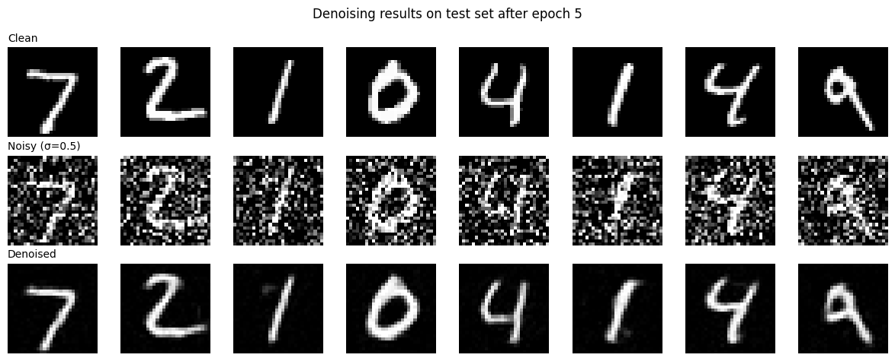
After just 1 epoch the denoiser already recovers every digit, but the outputs are a little blurry, with some gray haze left in the background and fuzzy edges, like on the second 1 and the 9. After 5 epochs the background is cleaner and the strokes are sharper and closer to the clean digits.
The denoiser was only trained at σ = 0.5, so I tested it on the same three test digits at other noise levels.
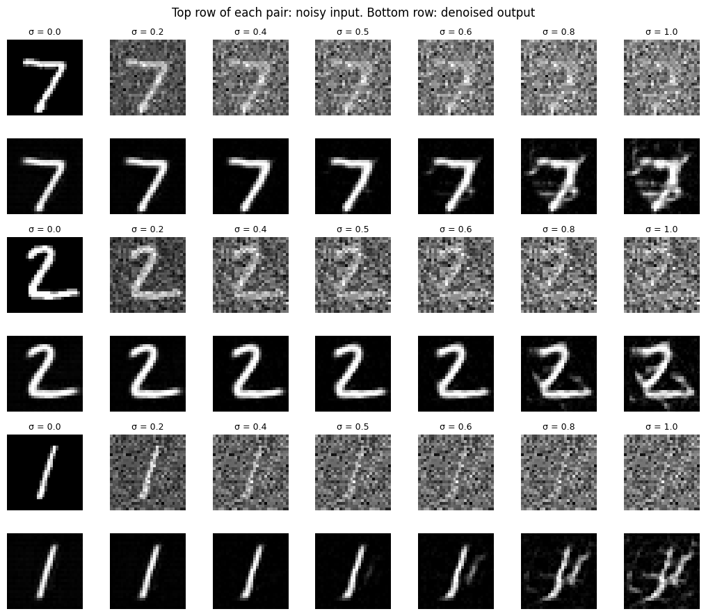
For σ at or below 0.5, the outputs are clean. Even with no noise at all it still works, just leaving the digit as it is. Above 0.5 it starts to break down: at 0.6 there are faint extra strokes, and at 0.8 and 1.0 the model invents extra lines and blobs, like turning the 1 into something that looks like a 4. It never learned how to handle that much noise, so it mistakes some of the noise for parts of the digit.
Here the input is pure noise z = ε with no digit in it at all, and the model is trained to output a clean digit anyway, with the same settings as 1.2.1.
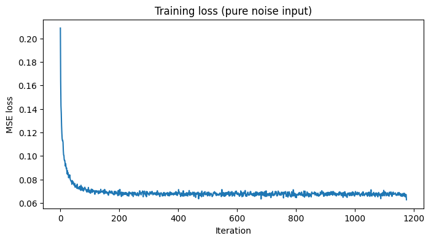
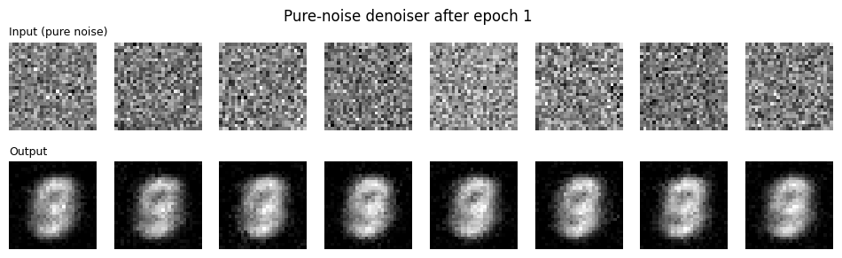
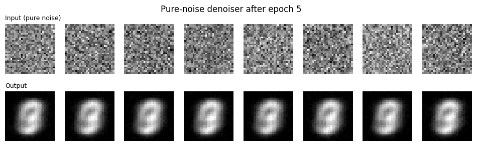
The loss drops fast in the first 100 steps and then flattens out around 0.067, much higher than the 0.01 from 1.2.1, because there is nothing in the input to help it.
What patterns appear? No matter what noise goes in, the model outputs the same thing: a blurry, glowing blob in the center of the image. After epoch 1 the blobs are a little grainy and differ slightly, and by epoch 5 all 8 outputs are nearly identical and smooth.
How do they relate to the digits 0–9? The blob isn't any one digit. It looks like all of the digits stacked on top of each other: you can see a rough 0 or 8 outline, with a brighter vertical stroke down the middle like a 1, inside a soft glow where most digits have their strokes.
Why does this happen? The input is pure random noise, so it has no information about which digit to make. With an MSE loss, the best the model can do is output the single image that has the smallest total squared distance to every training digit, which is the average of the whole training set. Like the centroid of a cluster, that average is a blend of all the digits, so the model learns to ignore its input and always output that mean image.
For flow matching, the UNet uθ(xt, t) predicts the flow x1 − x0 from noise x0 to a clean digit x1, at a point xt = (1 − t)x0 + t·x1 along the way. To tell the network what t is, I added two FCBlocks (Linear, GELU, Linear) that turn t into vectors that multiply the output of the unflatten layer and the first up block. I trained it with D = 64, batch size 64, Adam with an initial learning rate of 1e-2, and an exponential learning rate scheduler with γ = 0.11/10, for 10 epochs. For each batch I picked a random t and fresh noise for each image.
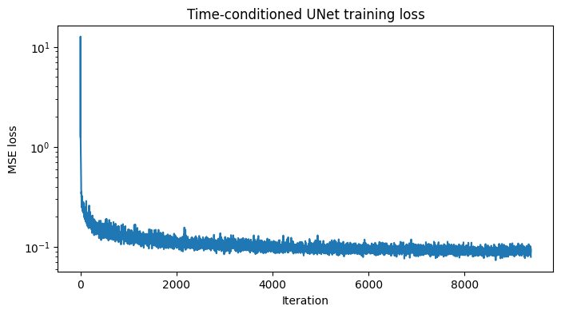
To sample, I start from pure noise and take 300 Euler steps from t = 0 to 1, each moving x by (1/300)·uθ(x, t).
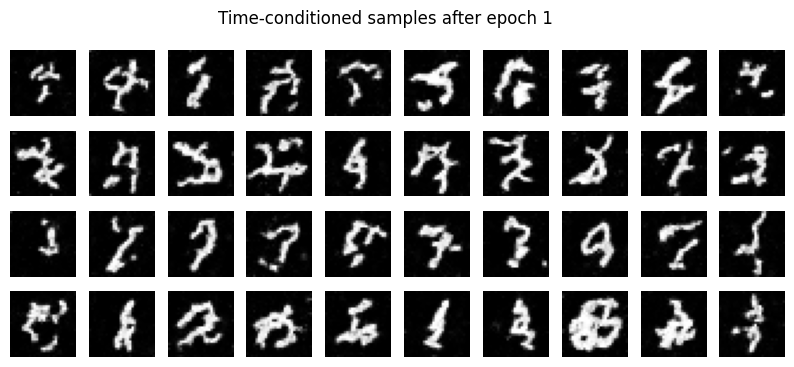
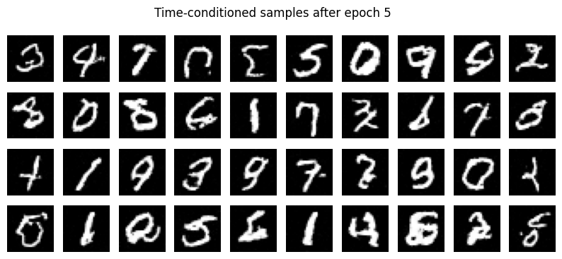
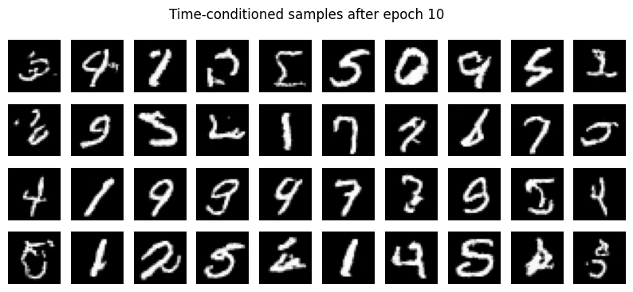
After 1 epoch the samples are thick, scribbly strokes that don't look like digits yet. By epoch 5 most of them are readable (0, 1, 3, 4, 5, 7, 9), and by epoch 10 the strokes are thinner and cleaner. Some samples are still not real digits, because the model has to pick a digit on its own and sometimes ends up halfway between two.
To control which digit gets generated, I added the class as a one-hot vector c. Two more FCBlocks
turn c into vectors c1 and c2, and the network now does
unflatten = c1 * unflatten + t1 and up1 = c2 * up1 + t2. During training,
10% of the time c is set to all zeros, so the same model also learns to generate without a class,
which I need for classifier-free guidance. Training settings are the same as 2.2.
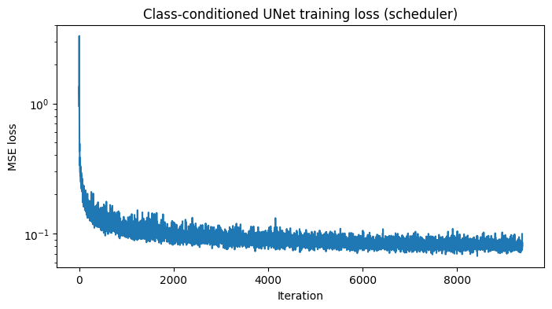
For sampling I used classifier-free guidance with γ = 5:
u = uuncond + γ(ucond − uuncond), with 300
Euler steps. Each figure has 4 samples of each digit 0–9.
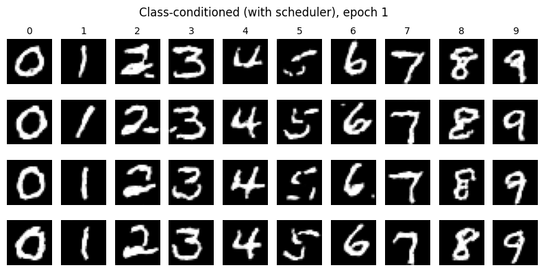
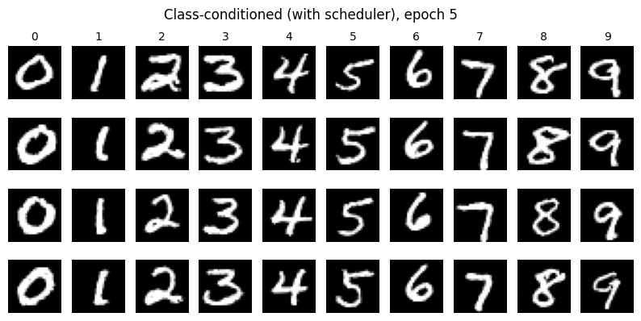
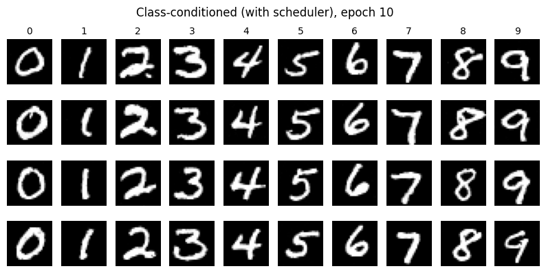
Class conditioning makes a huge difference. Even after 1 epoch every column is the correct digit, though a few are broken up (some of the 5s and 2s). By epoch 5 and 10 almost every sample is a clean, clearly readable digit, with some variety in style within each column.
The scheduler starts the learning rate at 1e-2 and lowers it to 1e-3 by the end. To get rid of it, I compensated by using a constant learning rate of 1e-3, which is the scheduler's final value. A constant 1e-2 would be too large to settle into a good minimum, while 1e-3 is small enough to be stable but still big enough to learn quickly with Adam.
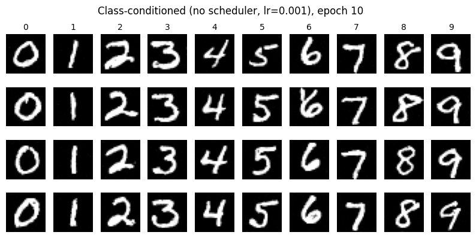
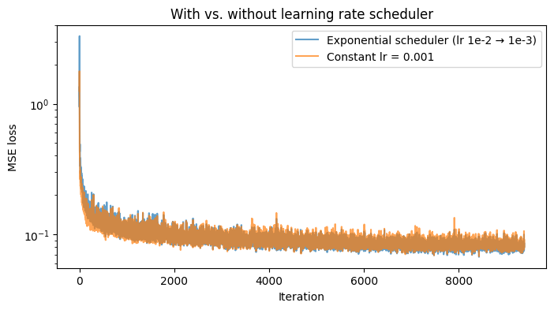
The results are basically the same. The two loss curves are almost on top of each other, and the samples after 10 epochs are just as clean and readable as with the scheduler. So for this small model and dataset, the scheduler isn't needed as long as the constant learning rate is chosen well.
← Back to portfolio